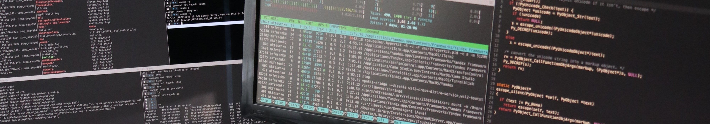

My resume
Summary
 AWS Certified Solutions Architect Associate with expertise in implementing and managing
cloud infrastructure on AWS. Possess a strong foundation in cloud computing technologies and AWS
services, including EC2, S3, RDS, Lambda, CloudFormation, in CI/CD methodologies and DevOps
tools. Skilled in designing, implementing and managing cloud infrastructure using Terraform and
CloudFormation, containerization with Docker, and in implementing CI/CD pipelines with AWS
CodePipeline, GitHub Actions. A collaborative team player with excellent communication and
troubleshooting skills.
AWS Certified Solutions Architect Associate with expertise in implementing and managing
cloud infrastructure on AWS. Possess a strong foundation in cloud computing technologies and AWS
services, including EC2, S3, RDS, Lambda, CloudFormation, in CI/CD methodologies and DevOps
tools. Skilled in designing, implementing and managing cloud infrastructure using Terraform and
CloudFormation, containerization with Docker, and in implementing CI/CD pipelines with AWS
CodePipeline, GitHub Actions. A collaborative team player with excellent communication and
troubleshooting skills.
Skills
- Programming languages: C, Python, JavaScript, HTML/CSS, Delphi
- AWS Services (EC2, S3, RDS, VPC, ALB, ECS, Fargate, CloudFormation, Route 53, Cloudfront etc.)
- Infrastructure Design and Implementation (AWS)
- DevOps & CI/CD Tools and Methodologies (Git, CloudFormation, Terraform, AWS CodePipeline, GitHub Actions, etc.)
- Containerization (Docker)
- Scripting and Programming Languages (Python, Bash, JavaScript)
- Networking Concepts and Security
- Web Design (Flask, HTML/CSS, SQL)
Certification
AWS Certified Cloud Practitioner [10/2022]
AWS Certified Solutions Architect Associate [12/2022]
Projects
Web Application 'Finance' - Stock Portfolio Tracking ToolGitHub
- 'Finance' is a stock portfolio tracking tool that allows users to monitor their stock transactions - Python, Flask, HTML/CSS, JavaScript, SQLite/PostgreSQL
- Migrated the application to AWS cloud utilising Three Tier VPC, EC2, Autoscaling, ALB & RDS
- Implemented the infrastructure as code using CloudFormation (https://github.com/Hevsy/cfn-finance)
- Set up and configured the CI/CD pipeline for CloudFormation Stacks using AWS CodePipeline, including stack testing with TaskCat/Cloud-Radar
Web application 'Travel Companion' - Travel Plan OrganiserGitHub
- A web application for organising travel plan ideas - Python, Flask, HTML/CSS, JavaScript, MySQL
- Containerized the application with Docker
- Configured the infrastructure as code using Terraform, utilizing a Three Tier VPC, ECS/Fargate, ALB, RDS
- Configured the CI/CD pipeline using AWS CodePipeline and GitHub Actions, including unit-tests
Personal Website GitHub
- Developed a static website utilizing AWS services such as S3, Route 53, and CloudFront
- Configured the CI/CD pipeline using AWS CodePipeline and GitHub, including AWS Lambda for CloudFront Invalidation
Work Experience
AWS Cloud Engineer | Freelance | Remote | 2022 - Present
- Design and implementation of cloud infrastructure on AWS using Terraform and CloudFormation
- Containerized applications using Docker and deployed them on ECS/Fargate and EKS
- Implemented CI/CD pipelines using AWS CodePipeline, including unit-tests, integration-tests and end-to-end tests
- Configured and managed AWS services such as EC2, S3, RDS, VPC, ALB, and Route 53
Aurecon | Sydney, NSW, Australia | Structural Engineer | 2022 - present
Aurecon is an international engineering and infrastructure consultancy
- Collaborated closely with clients and project managers to deliver high-quality structural engineering solutions
- Contributed to the development and implementation of Computational Design practices within the company (Python, Dynamo)
James Taylor & Associates | Sydney, NSW, Australia | Structural Engineer | 2016 - 2022
A.Len | St.-Petersburg, Russia | Structural Engineer | 2002 - 2009
- Developed small engineering applications in Delphi that automated common engineering tasks. This helped to streamline processes within the organization
FiCoTe | St.-Petersburg, Russia | Technical support specialist | 2000 - 2002
- Provided structural engineering support to the sales team of the façade systems and materials
- Managed computers and network of the company. Acquired valuable skills in IT management including handling software installations/upgrades as well troubleshooting common issues
Education & certification
CS50 - Introduction to Computer Science (Harvard University) [09/2022 - ongoing]
Bachelor of Civil Engineering (Honours) [Graduated: June 2010]
St.-Petersburg State Polytechnic University, St.-Petersburg, Russia - extramural education
Assessed by the Engineers Australia as comparable to the listed Australian Qualification
Framework (AQF). EA ID: 5321102, Application ID: 33416